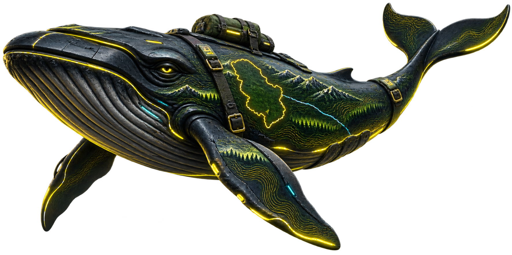
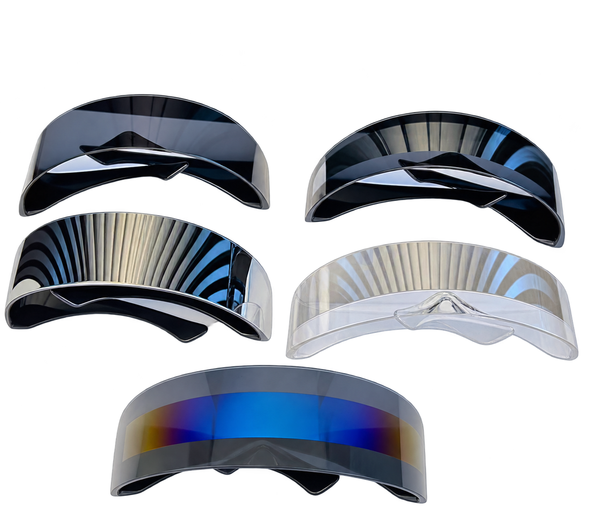
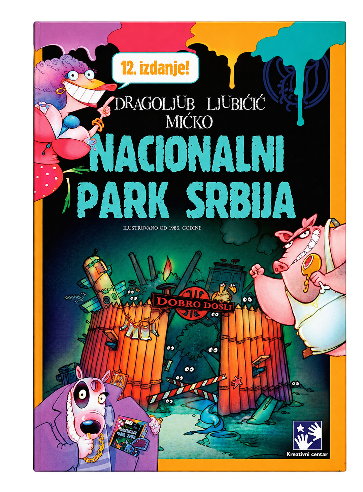

Hold the Game, Do Not Panic — Game
Practice improbable park encounters before attempting them outdoors.

A questionably essential collection for visitors who prefer to understand the warning sign before walking past it.
A game, a translator, danger-sensitive glasses, and a book for queues that have become permanent. Serbia is beautiful. Preparation is funnier.
Every item opens into its own field-guide window. Read the details before leaving civilization, or afterward while waiting for it to resume.
Practice improbable park encounters before attempting them outdoors.
Translate across 130+ languages online when smiling and pointing stop working.

Choose one of five original pairs for the complete kit. Not sold separately.

Emergency physical entertainment for queues, borders, delays, and traffic that has become permanent.
The contents were carefully selected. The circumstances were not.
The kit includes both applications, one selected Džu Džanta pair, and the book. After coordination and confirmation, you will receive the download links and any access codes required for the digital items.
SCREEN 01 · RESERVATION INTEREST
SCREEN 02 · WHAT IS INCLUDED
You receive coordination details first. Digital download links and any required access codes are sent after confirmation.
Delivery time depends on the weather, traffic, and the mood of the universe.